History (My Creations)
The signed-in user’s “My Creations” list (/history): filterable cards merging live in-memory jobs with a static seed, a per-row ⋯ options menu, and the delete/publish confirm flows.
| Platform | YouCam Muse Web (desktop) — captured at 1440px |
| Audience | QA |
| Scope | Browse & filter, opening a creation, the ⋯ menu (all five row-type variants), Publish, Delete, and the Edit MV / Create MV menu actions (tap only — see P6). |
| Out of scope | The destination screens themselves (/mv/result area 02, /song/result area 03, /mv/storyboard & /mv/edit area 02, /song/play area 04) — each gets one arrival step here and no further tour. |
| Source | specs/areas/05-history.md, specs/00-overview.md, and the running app |
↓ Flow Diagram — full user journey (click to expand)
Mermaid source
flowchart TD
Entry["Sidebar "History""] --> All["/history (All filter)"]
All --> Filter{Filter chip?}
Filter -->|Music Videos / Songs / Liked| Filtered["Re-filtered rows"]
Filter -->|none left| Empty["Empty-state card"]
All --> Row{Tap a row}
Row -->|done mv| MvR["/mv/result (area 02)"]
Row -->|done song| SongR["/song/result (area 03)"]
Row -->|storyboard| SB["/mv/storyboard (area 02)"]
Row -->|community| Play["/song/play (area 04)"]
Row -->|processing| Inert["(inert, no menu)"]
All --> Menu["⋯ menu (5 row-type variants)"]
Menu --> Quick["Like/Unlike · Share · Download"]
Menu --> PubMv{Publish, kind?}
PubMv -->|MV| Confirm["Ready to Go Public? confirm"]
Confirm --> Reviewing["reviewing+published, toast"]
PubMv -->|song| Toggle["Immediate toggle, toast"]
Menu --> Del["Delete confirm"]
Del --> Removed["Row removed (local)"]
Menu --> Cta["Edit MV / Create MV (area 02, S3)"]
| ID | Path | Entry point | Steps | Outcome |
|---|---|---|---|---|
| P1 | Browse & filter | Sidebar “History” | 5 steps | Rows filtered per chip; empty-state card when a filter has none |
| P2 | Open a creation | /history, any filter | 5 steps | The row’s own destination screen |
| P3 | The ⋯ menu — five row types, plus quick actions | /history, any filter | 8 steps | Menu open with that row type’s exact action set |
| P4 | Publish | /history, any filter | 4 steps | Row marked published (song) or reviewing+published (MV) |
| P5 | Delete | /history, any filter | 2 steps | Row removed from the list |
| P6 | Edit MV / Create MV | /history, any filter | 2 steps | Seeds the MV flow; no follow-through capture |
The four filter chips, and the empty state reached by emptying the cheapest one.
- P1-S1 Opens /history.
- P1-S2 Taps the Music Videos filter chip.
- P1-S3 Taps the Songs filter chip.
- P1-S4 Taps the Liked filter chip.
- P1-S5 Opens that row’s ⋯ menu and taps Unlike.
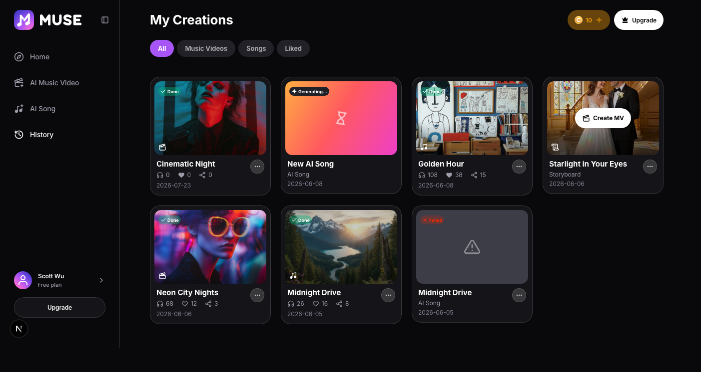
- Page title: “My Creations”
- Filter chips: “All”, “Music Videos”, “Songs”, “Liked”
- Every row shown here is the static seed — no live jobs exist in this capture session.All excludes the one community seed row (AC-HIST-01).
- A card’s status pill reads Done, Generating…, or Failed.A done storyboard shows no pill at all, only its Create MV pill.
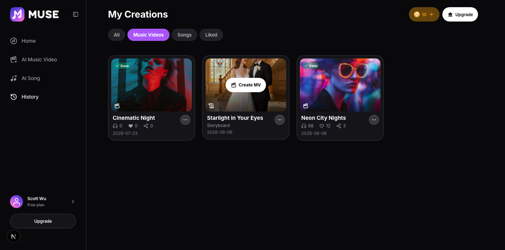
- 1Music Videos
- Music Videos = kind mv or storyboard, non-community (AC-HIST-02).
- 1Songs
- Songs = kind song, non-community (AC-HIST-02).
- A processing row renders in every filter it matches, with no way to open or act on it (HIST-E1).Confirmed in P2-S5: no ⋯ button at all, and its click does not navigate.
- 1Liked
- Liked never shows a liked OWN row, only community ones (HIST-03).Cinematic Night is seeded liked:true but non-community, and stays excluded from this tab.
- A community row shows no status pill at all (HIST-E3) — only Done/Generating/Failed own rows do.
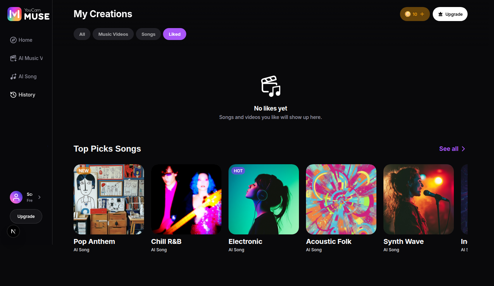
- Empty state: “Nothing here yet. Your liked will appear here.”
- Community rows expose no Delete action at all (P3-S4).Unlike, not Delete, is the only way to empty this tab — one click, the cheapest of the four filters.
- The empty-state sentence’s second half is the active chip’s own label, lower-cased (“creations” on All) (HIST-E5).
Where each row type routes on tap, and confirmation that a processing row is inert.
- P2-S1 Taps a done MV card (Cinematic Night).
- P2-S2 Taps a done song card (Golden Hour).
- P2-S3 Taps a storyboard card (Starlight in Your Eyes).
- P2-S4 On the Liked filter, taps the community row (Whispers of the Past).
- P2-S5 Confirms a processing row is inert (no menu, no navigation) — same screen as P1-S3.
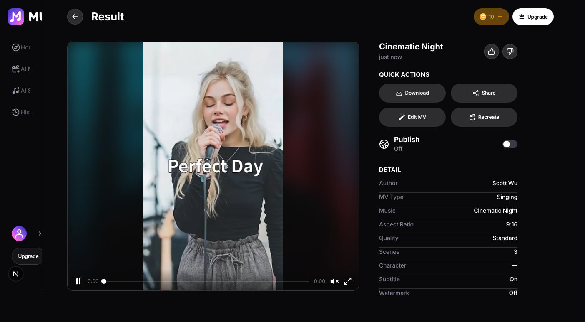
- Both the cover and the title are separate links to the same destination.Either click intercepts and calls the same handler (R-9); middle-click and copy-link both resolve honestly since the href matches.
- The result screen’s own controls are area 02’s territory, not covered here (AC-HIST-04).
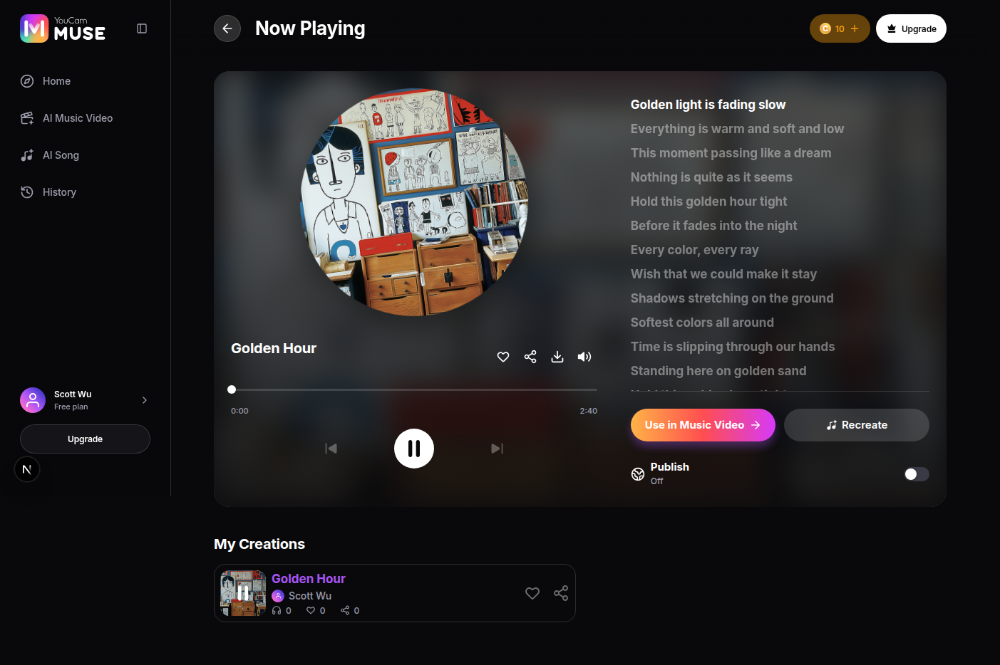
- Genre and mood are never carried from a History row, so the result screen omits that line entirely.Nothing in History records them for a seeded/live row.
- Lyrics are looked up by the row’s title against the mock catalog.A title with no match shows no lyrics panel — the same fallback the Song Creation spec documents for a Simple-mode song.
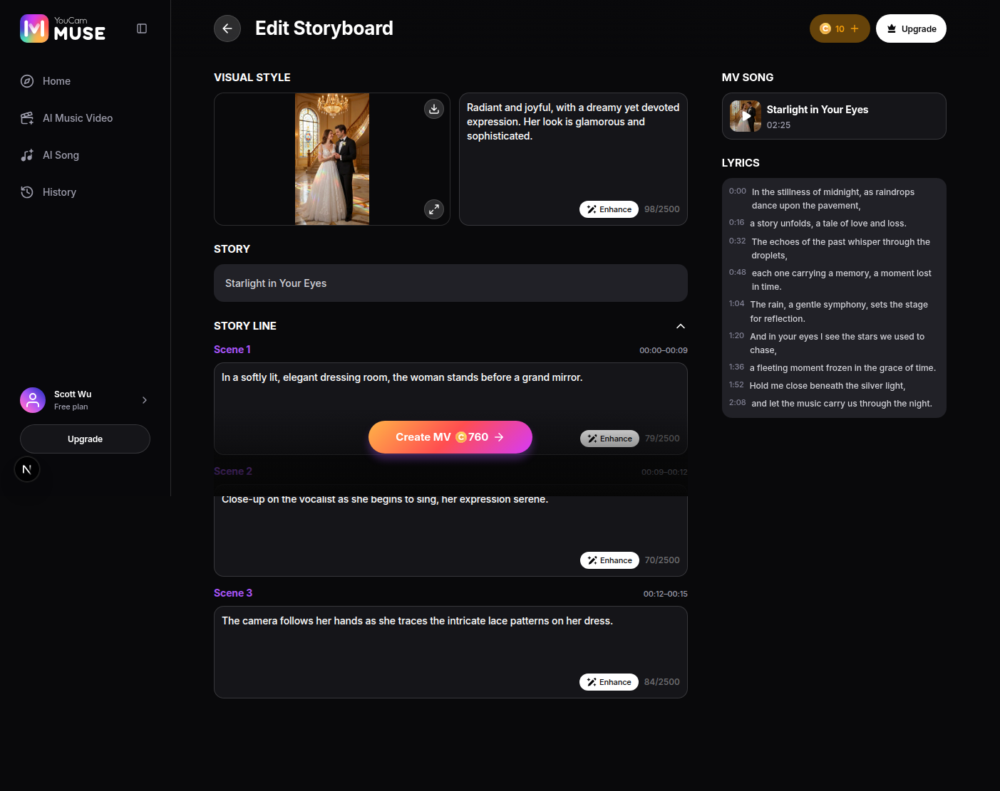
- Same flow-seeding step P6’s Create MV menu action uses on a storyboard row (AC-HIST-04, AC-HIST-07).
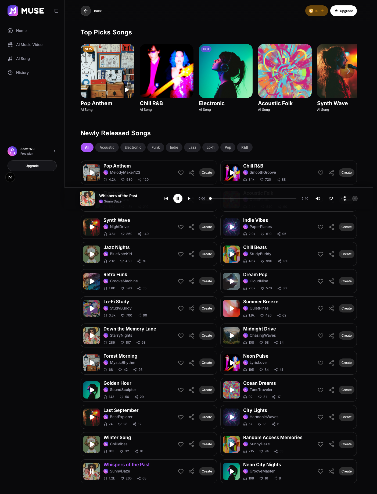
- A community row’s destination id is its `communitySongId`, not the History row’s own id.The two happen to look similar (“h-whispers-past” vs “ns-whispers-past”) but are different keys into different data.
- /song/play renders the full community catalog, not a standalone detail screen.This row plays in the fixed player bar there — area 04’s own territory.
- Confirmed live: zero ⋯ buttons on the row, and the URL is unchanged after clicking its cover (HIST-E1).
One capture per row-type variant, per area 05’s own “Net per type” table, plus Like/Unlike, Share and Download.
- P3-S1 Opens ⋯ on a done MV row (Cinematic Night).
- P3-S2 Opens ⋯ on a done song row (Golden Hour).
- P3-S3 Opens ⋯ on a storyboard row (Starlight in Your Eyes).
- P3-S4 On Liked, opens ⋯ on the community row.
- P3-S5 On Songs, opens ⋯ on the failed row (Midnight Drive).
- P3-S6 Taps Like inside an unliked MV row’s menu (Neon City Nights).
- P3-S7 Taps Share inside a row’s menu (Golden Hour).
- P3-S8 Taps Download inside a row’s menu (Golden Hour).
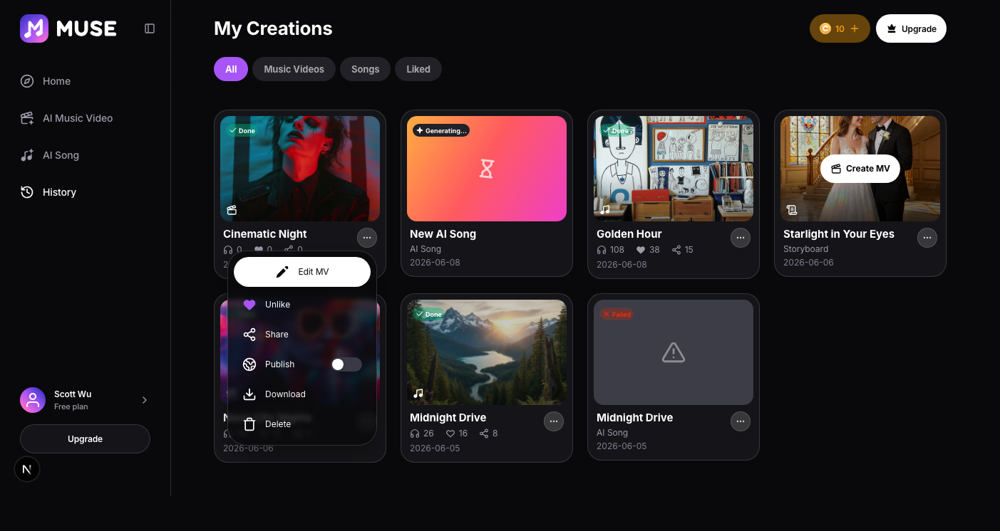
- 1Options (⋯)
- Menu rows, in order: “Edit MV”, “Unlike”, “Share”, “Publish”, “Download”, “Delete”
- Cinematic Night is seeded liked:true, so this row’s menu opens already reading “Unlike”.The label always reflects live state, never a fixed “Like” — see P3-S6 for the reverse case.
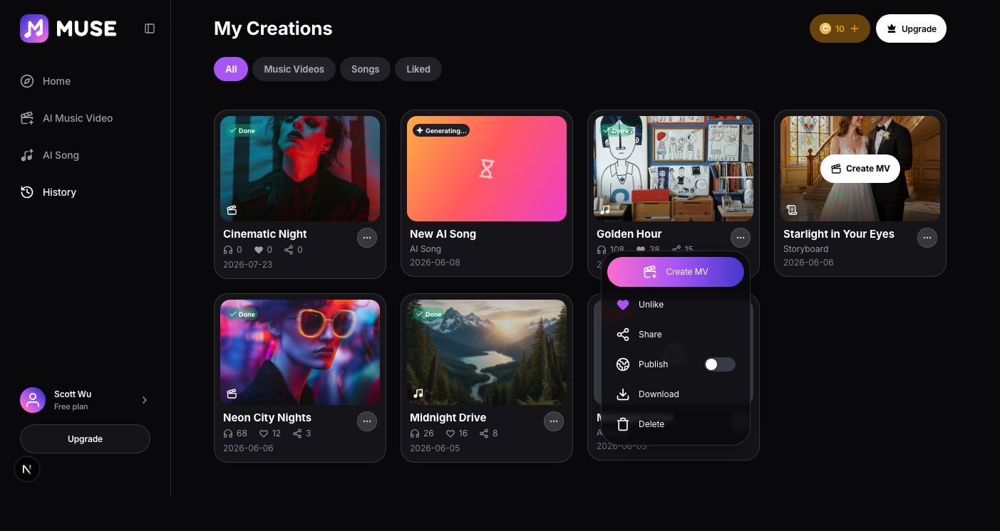
- 1Options (⋯)
- Menu rows, in order: “Create MV”, “Unlike”, “Share”, “Publish”, “Download”, “Delete”
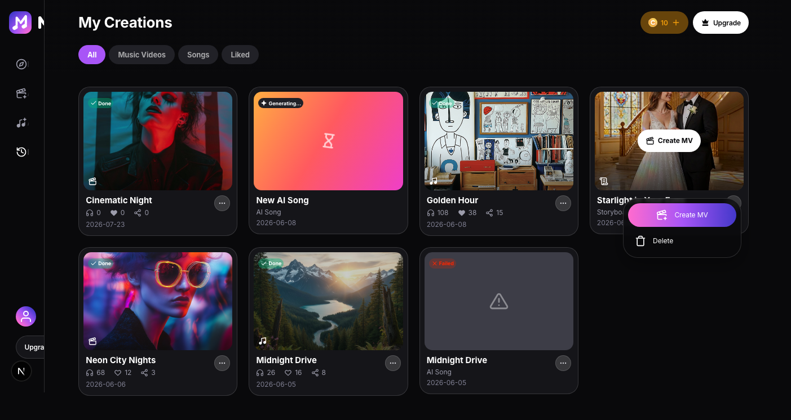
- 1Options (⋯)
- Menu rows, in order: “Create MV”, “Delete”
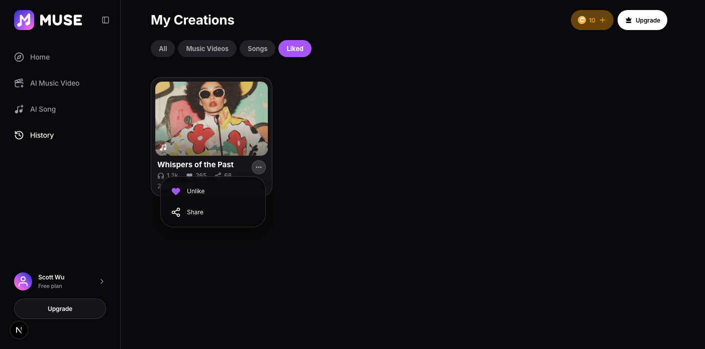
- 1Options (⋯)
- Menu rows, in order: “Unlike”, “Share”
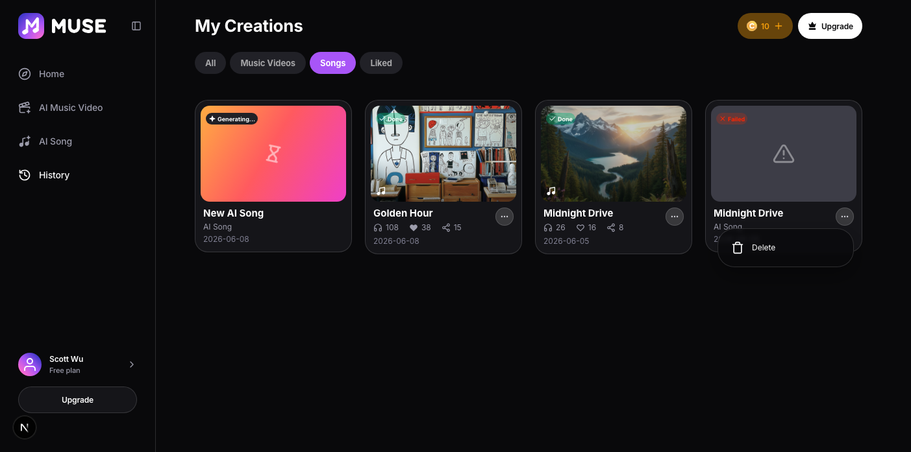
- 1Options (⋯)
- Menu row: “Delete”
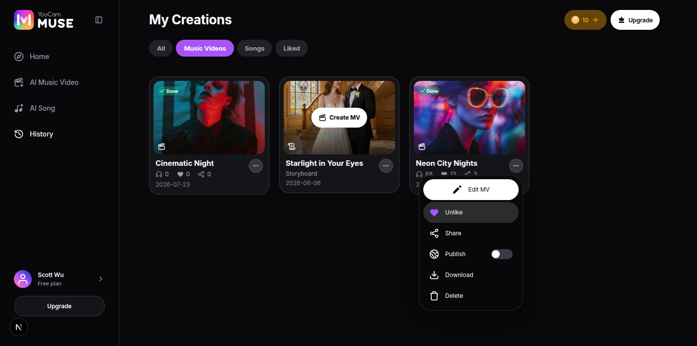
- Like is local-only — no API call, no History write (TBD-EXP-08).Confirmed: the toggle lives only in this page session; a reload restores the seed liked:false.
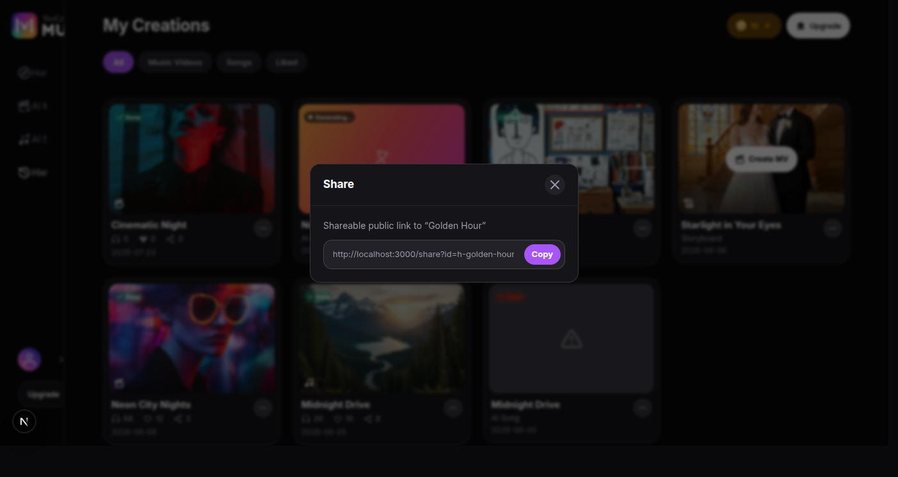
- Title: “Share”
- Body: Shareable public link to “{title}”
- Button: “Copy”
- Same ShareDialog and buildShareUrl(id) every other row type’s Share uses (AC-HIST-08).
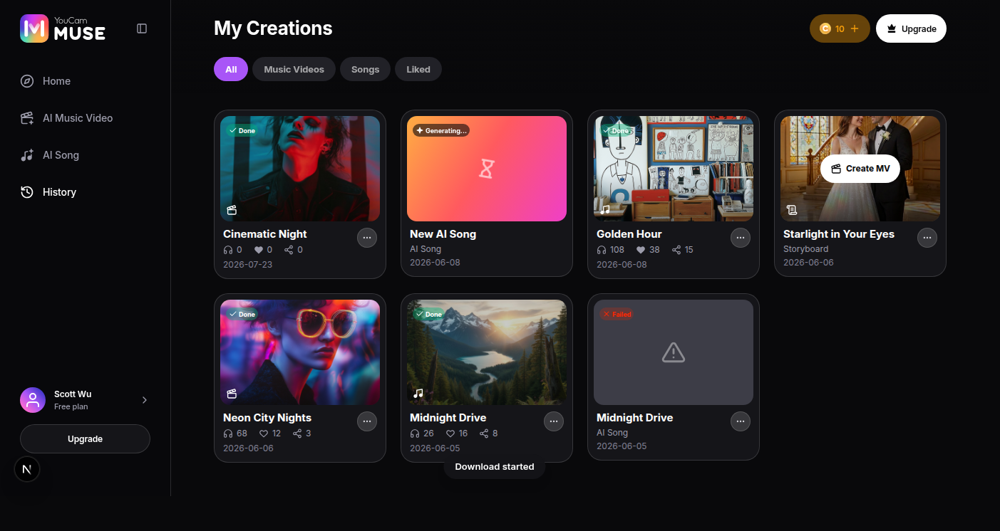
- Toast: “Download started”
- Download saves fixture media, not the row’s own render (TBD-HIST-01, 🔒).Song rows download the shared sample audio as “{title}.mp3”; mv/storyboard rows download the shared sample video as “{title}.mp4” (AC-HIST-08).
MV goes through a confirm step; song publishes immediately.
- P4-S1 Taps the Publish toggle on an MV row (Cinematic Night).
- P4-S2 Taps Confirm.
- P4-S3 Reopens the same row’s ⋯ menu.
- P4-S4 Taps Publish on a song row (Midnight Drive).
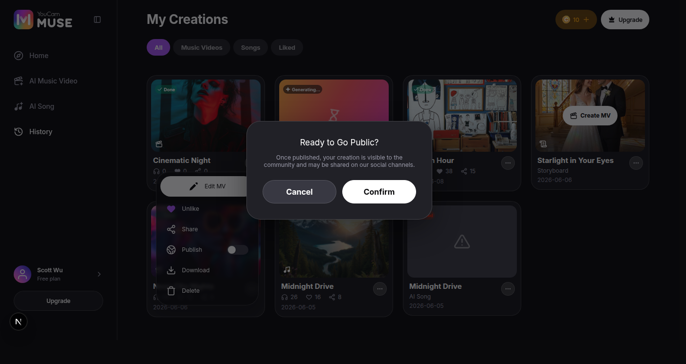
- 1Confirm
- Title: “Ready to Go Public?”
- Body: “Once published, your creation is visible to the community and may be shared on our social channels.”
- Buttons: “Cancel”, “Confirm”
- Same shared confirm dialog every MV/storyboard publish action in the app uses (History, /mv/result, Community Profile).
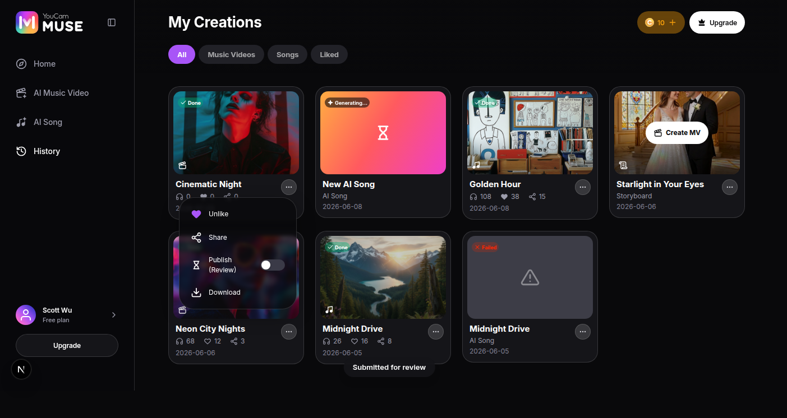
- Toast: “Submitted for review”
- `confirmPublishMv()` sets reviewing and published together, in the same write.Nothing in the app ever moves reviewing back to false on its own — see the open TBD-HIST-05 question below.
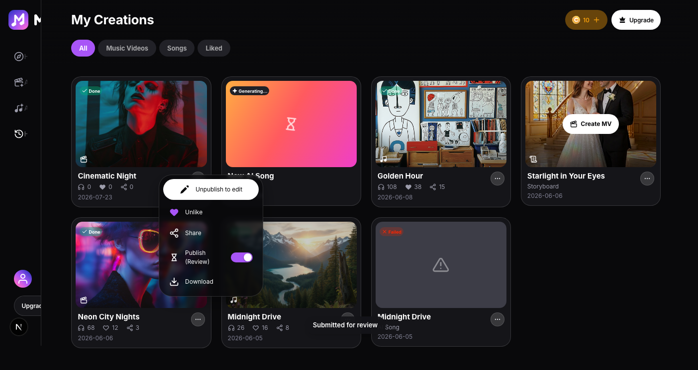
- 1Publish (Review)
- CTA label: “Unpublish to edit”
- Publish label while reviewing: “Publish (Review)”
- Unpublish to edit unpublishes the row on tap, then the menu reverts to plain Edit MV (MV-13).It does not itself open /mv/edit — a second tap is needed once unpublished.
- Delete is hidden whenever an MV is published or reviewing (AC-HIST-06).Confirmed: the same menu that showed Delete in P3-S1 no longer does here.
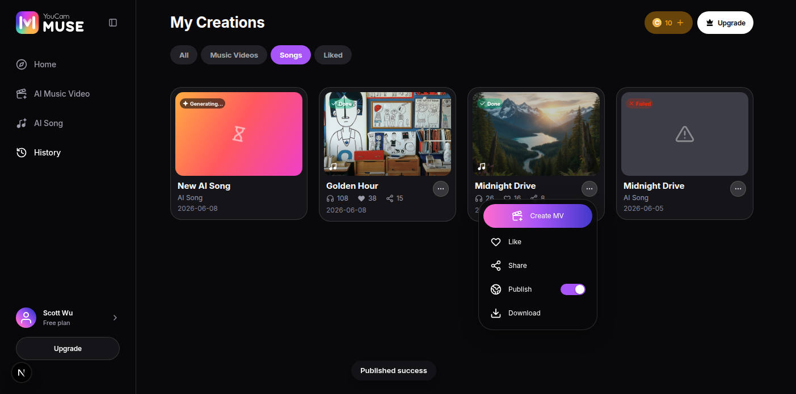
- 1Publish
- Toast: “Published success”
- A song publish never opens a confirm modal, unlike MV (AC-HIST-05).
- Toggling again unpublishes directly, with a “Unpublished success” toast.
- Delete is hidden for a published song too, same rule as MV (AC-HIST-06).
Confirm modal, then removal from the list.
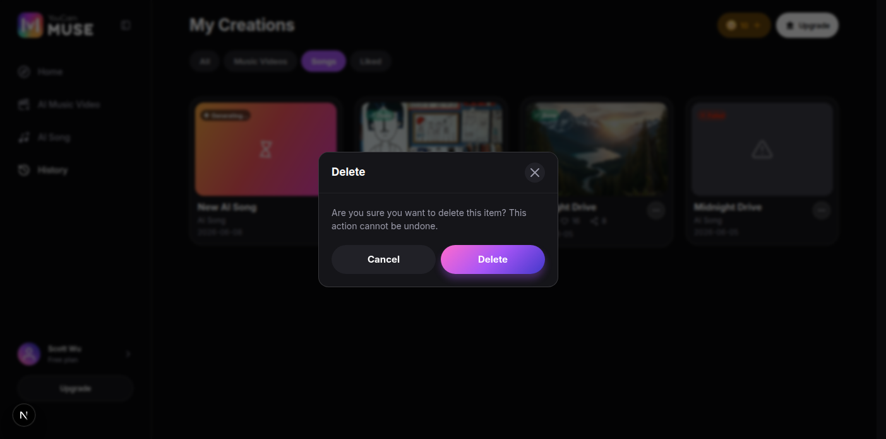
- 1Delete
- Title: “Delete”
- Body: “Are you sure you want to delete this item? This action cannot be undone.”
- Buttons: “Cancel”, “Delete”
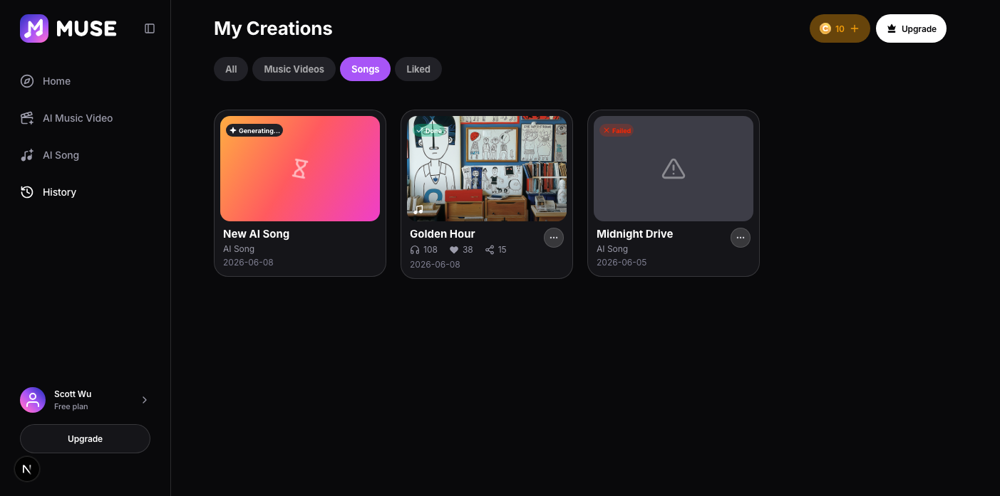
- Delete is list-local, not a server delete (🔒).A reload restores the seed row — nothing is removed server-side.
- Delete is hidden entirely for a published/reviewing row, before the menu is ever opened.No separate capture needed — P4-S3 already shows the same live state with no Delete entry (AC-HIST-06).
The ⋯ menu tap only — the destination screens belong to S2/S3.
- P6-S1 ⋯ → Edit MV on an unpublished MV row (Cinematic Night).
- P6-S2 ⋯ → Create MV on a song row (Golden Hour).
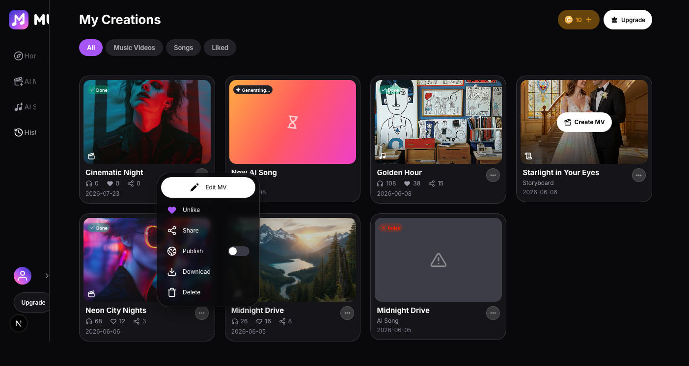
- 1Edit MV
- When published/reviewing, this same slot reads “Unpublish to edit” instead (P4-S3).That tap unpublishes; it does not route anywhere on its own.
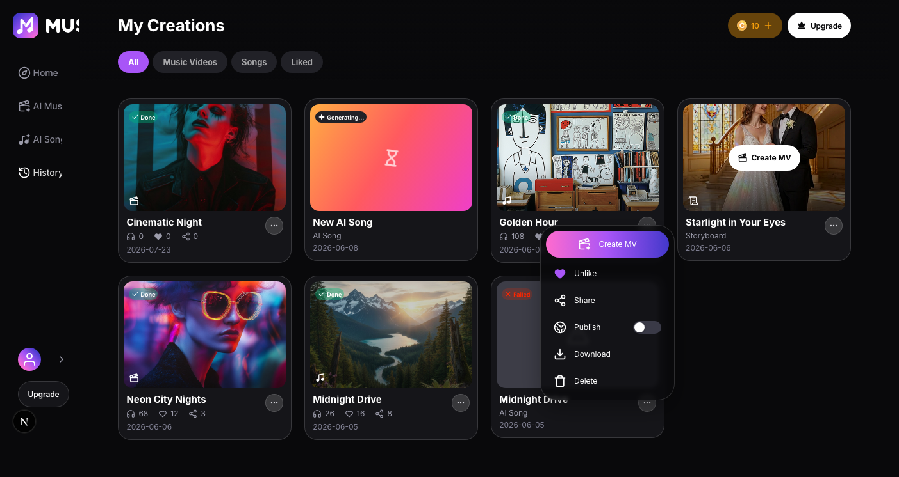
- 1Create MV
- On a storyboard row the same action routes to /mv/storyboard?id=… instead of /mv/room.Song has no existing storyboard to reopen; storyboard does.
- A storyboard row also exposes this action as a cover pill (HIST-05), not just in the menu.Visible on Starlight in Your Eyes in every earlier screenshot that includes it, e.g. P1-S1.
The contract of each screen state. The flow diagram shows the transitions; this shows what each state must render.
| State | Entry condition | Visible / enabled | Transitions | Exit |
|---|---|---|---|---|
| Row: processing | Live job status generating | Generating… pill, no ⋯ menu, not clickable | → done or failed on job outcome | — |
| Row: done (mv/song) | Live job done, or a done seed row | Status pill Done; full ⋯ menu per kind | → published/reviewing via Publish · removed via Delete | On navigation away |
| Row: done (storyboard) | Seed row, kind storyboard | No status pill; Create MV pill on the cover; ⋯ menu is Create MV + Delete | → removed via Delete | On navigation away |
| Row: failed | Live job status failed, or the failed seed row | Failed pill, alert placeholder, ⋯ menu is Delete only | → removed via Delete | On navigation away |
| Row: community | source is community | No status pill; ⋯ menu is Like/Unlike + Share only | — (no Publish/Delete/CTA) | — |
| MV: published/reviewing | Publish confirmed on an MV row | CTA reads “Unpublish to edit”; Publish reads “Publish (Review)”; Delete hidden | → back to unpublished via Unpublish to edit | On toggle |
| Song: published | Publish toggled on a song row | Publish toggle on; Delete hidden | → back to unpublished via the same toggle | On toggle |
Undecided, and blocking something. Everything settled lives beside the rule it governs, not here.
| ID | Question | Blocks | Owner |
|---|---|---|---|
| TBD-HIST-05 | What does a review-REJECTED MV look like? Publish sets reviewing and published together and nothing ever clears reviewing — there is no simulated delay, no rejection path, and no UI for it (status pill? a re-submit option in the menu? edit-first requirement? toast vs. persistent banner?). | A “review rejected” step in this spec’s Publish path (P4) — not built, per the Phase 0 scope decision. | Product owner / design |
Every acceptance criterion in plan.md and where this spec defines it — 11 of 11 map to a step. Write the test cases in your test tool; this table is the trace back to the spec.
| Criterion | What it asserts | Specified in |
|---|---|---|
| AC-HIST-01 | The All filter shows live jobs prepended to the seed samples, community rows excluded. | P1-S1 |
| AC-HIST-02 | Each filter chip shows only its matching rows (All=own, Music Videos=mv/storyboard, Songs=song, Liked=community-liked only). | P1-S2 · P1-S3 · P1-S4 |
| AC-HIST-03 | Processing shows a Generating pill with open/menu disabled; failed shows a Failed pill and Delete-only menu; storyboard shows a Create MV pill plus a Create MV + Delete menu. | P1-S3 · P2-S5 · P3-S3 · P3-S5 |
| AC-HIST-04 | A done MV routes to /mv/result, a done song to /song/result, a storyboard to /mv/storyboard, a community row to /song/play — no detail dialog opens. | P2-S1 · P2-S2 · P2-S3 · P2-S4 |
| AC-HIST-05 | MV Publish shows the Ready to Go Public confirm and marks reviewing+published with a toast on confirm; a song publishes immediately with no confirm. | P4-S1 · P4-S2 · P4-S4 |
| AC-HIST-06 | Delete confirmed removes the row; Delete is hidden for published/reviewing items. | P5-S1 · P5-S2 · P4-S3 · P4-S4 |
| AC-HIST-07 | Edit MV / Create MV seeds flow state and routes to /mv/edit / /mv/storyboard|/mv/room respectively. | P6-S1 · P6-S2 |
| AC-HIST-08 | Share opens ShareDialog with buildShareUrl(id); Download saves the fixture media as {title}.mp4|.mp3. | P3-S7 · P3-S8 |
| HIST-E1 | A processing row is not clickable and renders no ⋯ menu. | P2-S5 |
| HIST-E3 | A community row shows a reduced menu (Like/Share only) and no status pill. | P1-S4 · P3-S4 |
| HIST-E5 | An empty filter shows the “Nothing here yet” empty-state card. | P1-S5 |
| Error | Trigger | Message shown to user | Recovery | Refund? |
|---|---|---|---|---|
| Community row has no Delete or Publish | Any ⋯ menu opened on a source:community row (HIST-E3) | “Menu renders Like/Unlike and Share only — no CTA row, Publish, Download, or Delete” | N/A — not an error state, a deliberate reduced menu | N/A — History never writes to the community backend (🔒) |
| Failed row has no Like/Share | Any ⋯ menu opened on a status:failed row (HIST-06, HIST-E2) | “Menu renders Delete only” | Delete removes the row from the list; no other recovery action exists in History | N/A — nothing was charged for a failed generation to refund here |
| Reload loses live rows | Any full page reload of /history (HIST-E4) | “Live in-memory jobs vanish; only the 8 static seed rows remain, with all overrides (liked/published/removed) reset” | None — there is nothing to retry; the data was never persisted | N/A — 🔒 TBD-GL-04 |
| Logged-out visitor | Any attempt to reach /history while signed out (HIST-E6) | “AuthGuard renders the sign-in modal; the page body is not shown” | Sign in resumes the same navigation (see the Song Creation spec, P4) | N/A — gated before any content renders |
Publish’s downstream server pipeline (moderation, review → community feed) is spec-only — TBD-HIST-04. This table covers only what the ⋯ menu and its confirm modals do today.
Where the prototype fakes or stubs behaviour. Build the production must do column — never the prototype behaviour.
| Area | Prototype does | Production must do |
|---|---|---|
| Live rows are in-memory only | Live jobs prepended to the list vanish on a full page reload; only the static 8-row seed remains, and every override (liked/published/removed) resets with it. | A real history endpoint (TBD-HIST-01, TBD-GL-04) must persist rows and their state server-side across reloads and devices. |
| Like / Publish / Delete are all local overrides | None of the three write anywhere — `liked`/`published`/`reviewing` live in a per-row `ov` map in component state, and Delete just adds the id to a `removed` set. No API call is made for any of them. | Real endpoints must exist for each; Publish additionally needs the moderation/review pipeline into the community feed that decides reviewing → published or reviewing → rejected (TBD-HIST-04, and the rejected half is TBD-HIST-05). |
| Download uses fixture media, not the row’s own render | Every song download is the same shared sample audio file; every mv/storyboard download is the same shared sample video file, regardless of which row triggered it. | A real render pipeline must serve each row’s own generated file at download time. |
| ID | Question | Decision |
|---|---|---|
| D-01 | PLAN.md’s own Phase 0 scope note describes the Liked-tab empty state as reached via “a live delete-to-empty” — does the code actually support deleting a community row? | No — confirmed live and in the ⋯ menu’s own net-per-type table (P3-S4): a community row exposes Like/Unlike and Share only, never Delete. The empty state is reached by Unlike instead, still the cheapest single click on the one seeded community-liked row. Captured as Unlike (P1-S5), not Delete. |
| D-02 | Cinematic Night and Golden Hour are both seeded liked:true — use them for the ⋯ menu captures anyway, or pick unliked rows so the menu opens on “Like”? | Used them as-is (P3-S1, P3-S2): the menu always reflects live seed state, and showing that live state (here, “Unlike”) is more honest than staging an artificial “Like” label. The one Like-to-Unlike demonstration (P3-S6) uses Neon City Nights, which is seeded liked:false, so that transition is still shown once. |
| D-03 | Where does the History storyboard stop relative to the screens each row opens? | One arrival step per destination (P2), with its own controls left to that screen’s own area spec/storyboard (area 02/03/04, S2/S3/S8) — matching S1’s own precedent at the History boundary, applied here in the other direction. |
| D-04 | Comments layer for this spec? | Disabled — no Firebase backend exists in this repo yet, same as S1. |